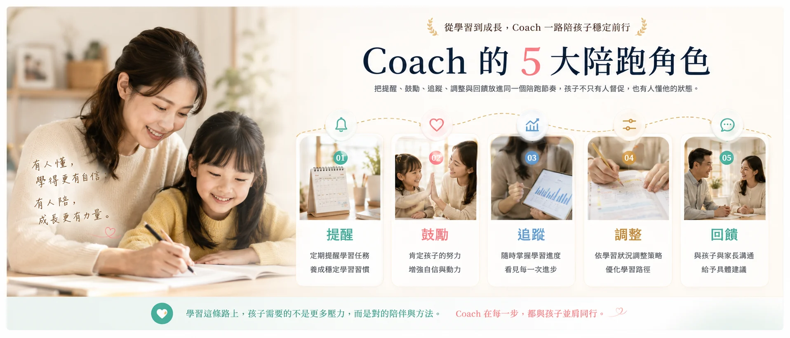
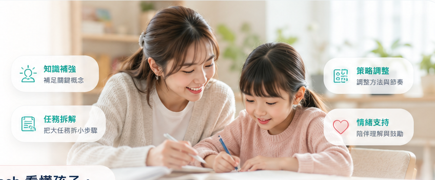
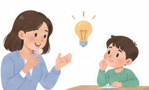
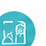
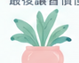
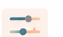
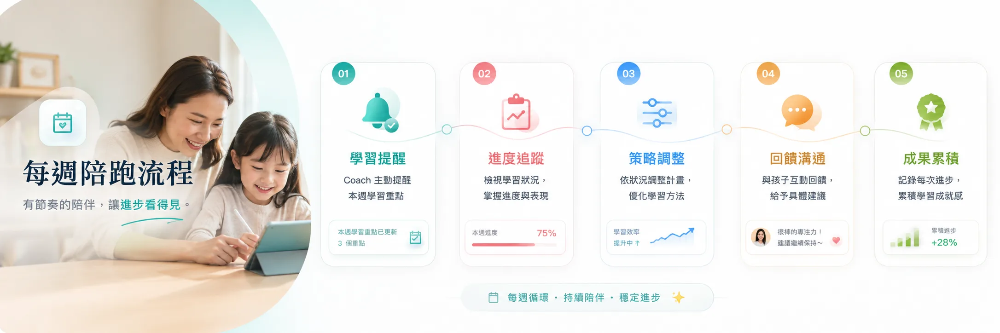

陪跑服務
提醒
把任務變成可完成的小步驟，降低拖延與逃避。
AI 找出孩子卡在哪裡，Coach 則負責把數據變成孩子做得到的任務、家長看得懂的回饋，以及每週持續調整的學習節奏。

孩子需要的不只是答案，而是有人在他想放棄前提醒、在卡住時陪他拆解、在進步時讓他被看見。
這題先圈出關鍵條件，我陪你一步一步看。
完成後我們把錯題放進明天複習。
把任務變成可完成的小步驟，降低拖延與逃避。
穩定節奏用具體回饋肯定努力，讓孩子願意再試一次。
建立信心依表現調整策略，不讓孩子一直用錯方法硬撐。
策略陪伴Coach 陪跑的重點是把孩子最容易中斷的地方接住：開始、卡住、失去信心、需要調整方法。孩子感覺有人在旁邊理解自己，才更容易把學習持續下去，也能在遇到挫折時知道還有下一步可以試。
AiMii Coach 依據孩子的任務完成率、錯題紀錄、弱點單元與學習節奏，判斷孩子目前需要的是知識補強、任務拆解、策略調整，還是情緒支持。

孩子不需要一開始就變得自律，而是先從每天完成一個清楚的小任務開始。
AiMii 不只看孩子答錯哪一題，更看他卡在知識點、理解思路或學習策略的哪一層。
好的 Coach 不是替孩子完成答案，而是在孩子差一步就能理解的地方，引導他說出自己的想法。

Coach 不只幫孩子完成任務，也幫孩子降低挫折，建立安全感與持續學習的動機。

聯結主義孩子缺的不是更多內容，而是有人幫他把 AI、教材、老師、家長與任務連成清楚路線。
Coach 的專業，在於讓任務變成習慣，最後讓習慣慢慢變成孩子自己的學習能力。

AI 診斷錯題、弱點與任務狀態
Coach 連結孩子、教材、老師與家長回饋
把弱點排成每日任務與每週目標
孩子完成任務，系統記錄學習行為
給孩子與家長具體、正向的回饋
依完成率、錯因與情緒狀態調整節奏

讓學習更聰明
讓成長更完整
讓服務更穩定

體檢會整理知識缺口與學習行為，Coach 才能更精準地提醒、拆解與陪伴。